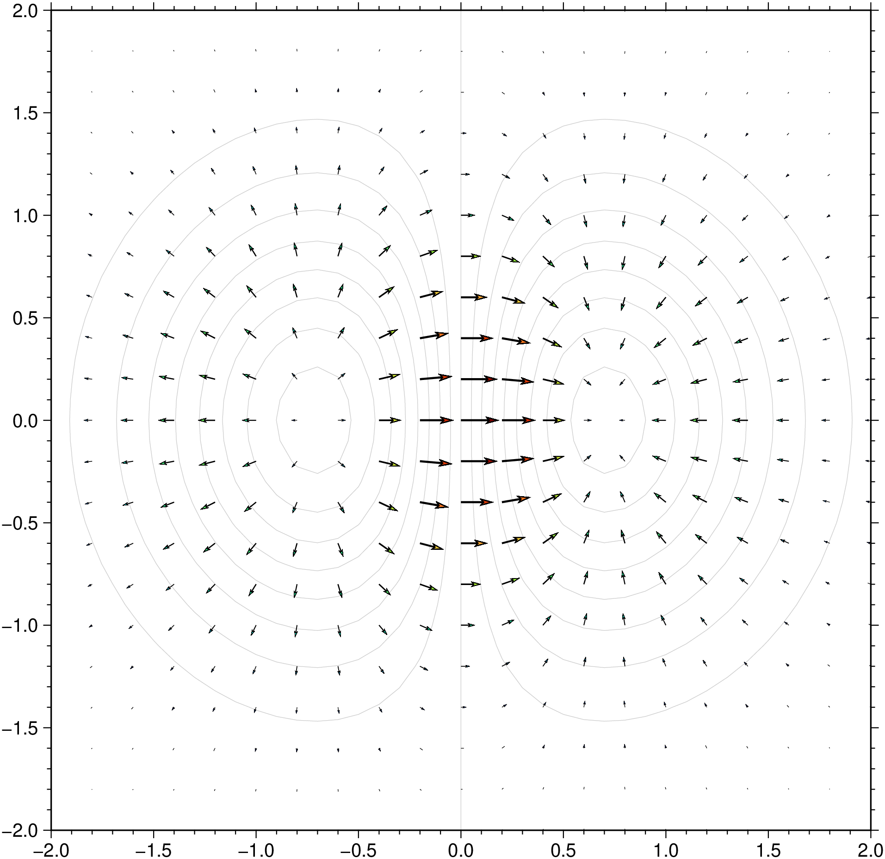

using GMT
X,Y = meshgrid(-pi:pi/8:pi,-pi:pi/8:pi);
U = sin.(Y);
V = cos.(X);
quiver(X, Y, U, V, region=(-3.6,3.6,-3.6,3.6), fill=:black, lc=:red, show=true)
quiver(compx, compy; kwargs...)
or
quiver(X, Y, U, V; kwargs...)Plot vector field from two component grids
Reads two 2-D grid files which represents the x and y components of a vector field and produces a vector field plot by drawing vectors with orientation and length according to the information in the files. Alternatively, polar coordinate r, theta grids may be given instead. To replicate the Matlab functioning one can also pass four arrays in input: X, Y -> arrays of coordinates as produced by meshgrid; U, V horizontal and vertical components.
compx Contains the x-components of the vector field.
compy Contains the y-components of the vector field.
A or polar : – polar=true
The grid files contain polar (r, theta) components instead of Cartesian (x, y) [Default is Cartesian components].
B or axes or frame
Set map boundary frame and axes attributes. Default is to draw and annotate left, bottom and vertical axes and just draw left and top axes. More at frame
C or color or cmap or colorap or colorscale : – color=cpt
Where cpt is a GMTcpt type or a cpt file name (for grd_z only). Alternatively, supply the name of a GMT color master dynamic CPT [turbo] to automatically determine a continuous CPT from the grid’s z-range; you may round up/down the z-range by adding +i zinc. Yet another option is to specify color=“color1,color2 [,color3 ,…]” or color=((r1,g1,b1),(r2,g2,b2),…) to build a linear continuous CPT from those colors automatically. In this case color1 etc can be a (r,g,b) triplet, a color name, or an HTML hexadecimal color (e.g. #aabbcc ) (see Setting color). When not explicitly set, but a color map is needed, we will either use the current color map, if available (set by a previous call to makecpt), or the default turbo color map.
G or fill : – fill=fill
Sets color or shade for vector interiors (see Fill color/pattern) [Default is no fill]. Alternatively, the fill may be set via |-Q|.
I or inc or increment or spacing : – inc=x_inc | inc=(x_inc, y_inc) | inc=“x”“multx”[“/multy”]
Only plot vectors at nodes every x_inc, y_inc apart (must be multiples of original grid spacing). Append m for arc minutes or s for arc seconds. Alternatively, use inc=“x” to specify the multiples multx[/multy] directly [Default plots every node]. Example inc=“x10/5” to select every other 10 nodes in x and 5 nodes in y. NOTE: by default we estimate good values so that the arrows do no overlap so you may start by jumping this option unless some fine control is desired.
J or proj or projection : – proj=
Select map projection. More at proj
N or noclip or no_clip : noclip=true
Do NOT clip vectors at map boundaries [Default will clip].
Q or vec or vector or arrow : – vector=parameters
Modify vector parameters. For vector heads, append vector head size [Default is 0, i.e., stick-plot]. See Vector Attributes for specifying additional attributes.
R or region or limits : – limits=(xmin, xmax, ymin, ymax) | limits=(BB=(xmin, xmax, ymin, ymax),) | limits=(LLUR=(xmin, xmax, ymin, ymax),units=“unit”) | …more
Specify the region of interest. More at limits. For perspective view view, optionally add zmin,zmax. This option may be used to indicate the range used for the 3-D axes. You may ask for a larger w/e/s/n region to have more room between the image and the axes.
S or vscale or vec_scale : – vscale=(inverse=len, length=len, scale=xx, scale_at_lat=??, refsize=size)
Sets scale for vector plot lengths in data units per plot distance measurement unit. Append c, i, or p to indicate the desired plot distance measurement (then xx must be a string) unit (cm, inch, or point); if no unit is given we use the default value that is controlled by PROJ\_LENGTH\_UNIT. Vector lengths converted via plot unit scaling will plot as straight Cartesian vectors and their lengths are not affected by map projections and coordinate locations. For geographic data you may alternatively give scale in data units per map distance unit (see Units). Then, your vector magnitudes (in data units) are scaled to map distances in the given distance unit, and finally projected onto the Earth to give plot dimensions. These are geo-vectors that follow great circle paths and their lengths may be affected by the map projection and their coordinates. Finally, use vscale=(inverse=len,…) if it is simpler to give the reciprocal scale in plot length or distance units per data unit. Alternatively, use vscale=(length=len,…) to set a fixed plot len for all vectors. To report the minimum, maximum, and mean data and plot vector lengths of all vectors plotted, use verbose option. If an automatic legend entry is desired via label, or or two modifiers will be required:
scale_at_lat=slon or scale_at_lat=(slon,slat) or scale_at_lat=true controls where on a geographic map a geovector’s refsize length applies. The modifier is neither needed nor available when plotting Cartesian vectors. The length is calculated for latitude slat (optionally supply longitude slon for oblique projections [default is central meridian]). If scale_at_lat=true then we select the reference length origin to be the middle of the map.
refsize=size sets the desired reference vector magnitude in data units. E.g., for a reference length of 25 mm/yr for plate motions, use modifier refsize=25 with a corresponding option label=“Velocity (25 mm/yr)”. If refsize is not specified we default to the scale given above.
T or sign_scale : – sign_scale=true
Means the azimuths of Cartesian data sets should be adjusted according to the signs of the scales in the x- and y-directions [Leave alone]. This option can be used to convert vector azimuths in cases when a negative scale is used in one of both directions (e.g., positive down).
U or time_stamp : – time_stamp=true | time_stamp=(just=“code”, pos=(dx,dy), label=“label”, com=true)
Draw GMT time stamp logo on plot. More at timestamp
V or verbose : – verbose=true | verbose=level
Select verbosity level. More at verbose
W or pen=pen
Set pen attributes for the arrow stem [Defaults: width = default, color = black, style = solid]. See Pen attributes and Vector attributes for arrow line terminations.
X or xshift or x_offset : xshift=true | xshift=x-shift | xshift=(shift=x-shift, mov=“a|c|f|r”)
Shift plot origin. More at xshift
Y or yshift or y_offset : yshift=true | yshift=y-shift | yshift=(shift=y-shift, mov=“a|c|f|r”)
Shift plot origin. More at yshift
figname or savefig or name : – figname=name.png
Save the figure with the figname=name.ext where ext chooses the figure image format.
Z or azimuth : – azimuth=true
The theta grid provided contains azimuths rather than directions (implies polar=true).
f or colinfo : – colinfo=??
Specify the data types of input and/or output columns (time or geographical data). More at
l or legend : – legend=params
Add a map legend entry to the session legend information file for the current plot (modern mode only). While this option is not expanded, see params at The -l option
p or view or perspective : – view=(azim, elev)
Default is viewpoint from an azimuth of 200 and elevation of 30 degrees.
Specify the viewpoint in terms of azimuth and elevation. The azimuth is the horizontal rotation about the z-axis as measured in degrees from the positive y-axis. That is, from North. This option is not yet fully expanded. Current alternatives are:
bar3!) More at perspectivet or transparency or alpha: – alpha=50
Set PDF transparency level for an overlay, in (0-100] percent range. [Default is 0, i.e., opaque]. Works only for the PDF and PNG formats.
Units
For map distance unit, append unit d for arc degree, m for arc minute, and s for arc second, or e for meter [Default unless stated otherwise], f for foot, k for km, M for statute mile, n for nautical mile, and u for US survey foot. By default we compute such distances using a spherical approximation with great circles (-jg) using the authalic radius (see PROJ_MEAN_RADIUS). You can use -jf to perform “Flat Earth” calculations (quicker but less accurate) or -je to perform exact geodesic calculations (slower but more accurate; see PROJ_GEODESIC for method used).
A nice arrow field
using GMT
X,Y = meshgrid(-pi:pi/8:pi,-pi:pi/8:pi);
U = sin.(Y);
V = cos.(X);
quiver(X, Y, U, V, region=(-3.6,3.6,-3.6,3.6), fill=:black, lc=:red, show=true)
For simplicity let’s create a grid using grdmath and compute its horizontal derivatives. Then we plot them as an arrow field.
G = gmt("grdmath -R-2/2/-2/2 -I0.1 X Y R2 NEG EXP X MUL");
dzdy = gmt("grdmath ? DDY", G);
dzdx = gmt("grdmath ? DDX", G);
grdcontour(G, annot=:none, pen=:gray80)
quiver!(dzdx, dzdy, cmap=:turbo, lw=1, show=true)
The scale given via vscale may require some consideration. As explained in vscale, it is specified in data-units per plot or distance unit. The plot or distance unit chosen will affect the type of vector you select. In all cases, we first compute the magnitude r of the user’s data vectors at each selected node from the x and y components (unless you are passing r, theta grids directly with polar). These magnitudes are given in whatever data units they come with. Let us pretend our data grids record secular changes in the Earth’s magnetic horizontal vector field in units of nTesla/year, and that at a particular node the magnitude is 28 nTesla/year (in some direction). If you specify the scale using plot distance units (c | i | p) then you are selecting Cartesian vectors. Let us further pretend that you selected vscale=“10c” as your scale option. That means you want 10 nTesla/year to equate to a 1 cm plot length. Internally, we convert this scale to a plot scale of 1/10 = 0.1 cm per nTesla/year. Given our vector magnitude of 28 nTesla/year, we multiply it by our plot scale and finally obtain a vector length of 2.8 cm, which is then plotted. The user’s data units do not enter of course, i.e., they always cancel [Likewise, if we had used vscale=“25i” (25 nTesla/year per inch) the plot scale would be (1/25) = 0.04 inch per nTesla/year and the vector plot lengths would be 28 * 0.04 inch = 1.12 inch]. If we now wished to plot a 10 nTesla/year reference vector in the map legend we would plot one that is 10 times 0.1 cm = 1 cm long since the scale length is constant regardless of map projection and location. A 10 nTesla/year vector will be 1 cm anywhere.
Let us contrast this behavior with what happens if we use a geographic distance unit instead, say vscale=“0.5k” (0.5 nTesla/year per km). Internally, this becomes a map scale of 2 km per nTesta/year. Given our node magnitude of 28 nTesla/year, the vector length will be 28 x 2 km = 56 km. Again, the user’s data unit do not enter. Now, that vector length of 56 km must be projected onto the Earth, and because of map distortions, a 56 km vector will be mapped to a length on the plot that is a function of the user’s map projection, the map scale, and possibly the location on the map. E.g., a 56 km vector due east at Equator on a Mercator map would seem to equal ~0.5 degree longitude but at 60 north it would be more like ~1 degree longitude. A consequence of this effect is that a user who wants to add a 10 nTesla/year reference vector to a legend faces the same problem we do when we wish to draw a 100 km map scale on a map: the plotted length usually will depend on latitude and hence that reference scale is only useful around that latitude.
This brings us to the inverse scale option, vscale=(inverse=len,…). This variant is useful when providing the inverse of the scale is simpler. In the Cartesian case above, we could instead give vscale=(inverse=“0.1c”) which would directly imply a plot scale of 0.1 cm per nTesla/year. Likewise, for geographic distances we could give vscale=(inverse=“2k”) for 2 km per nTesla/year scale as well. As the inverse argument increases, the plotted vector length increases as well, while for plain vscale the plot length decreases with increasing scale.
Be aware that using inc may lead to aliasing unless your grid is smoothly varying over the new length increments. It is generally better to filter your grids and resample at a larger grid increment and use these grids instead of the originals.
This function has multiple methods:
grdvector(arg1::Matrix{<:Real}, arg2::Matrix{<:Real}; kw...) - grdvector.jl:186grdvector(arg1, arg2; first, kwargs...) - grdvector.jl:58grdvector(arg1::Matrix{<:Real}, arg2::Matrix{<:Real}, arg3::Matrix{<:Real}, arg4::Matrix{<:Real}; kw...) - grdvector.jl:188